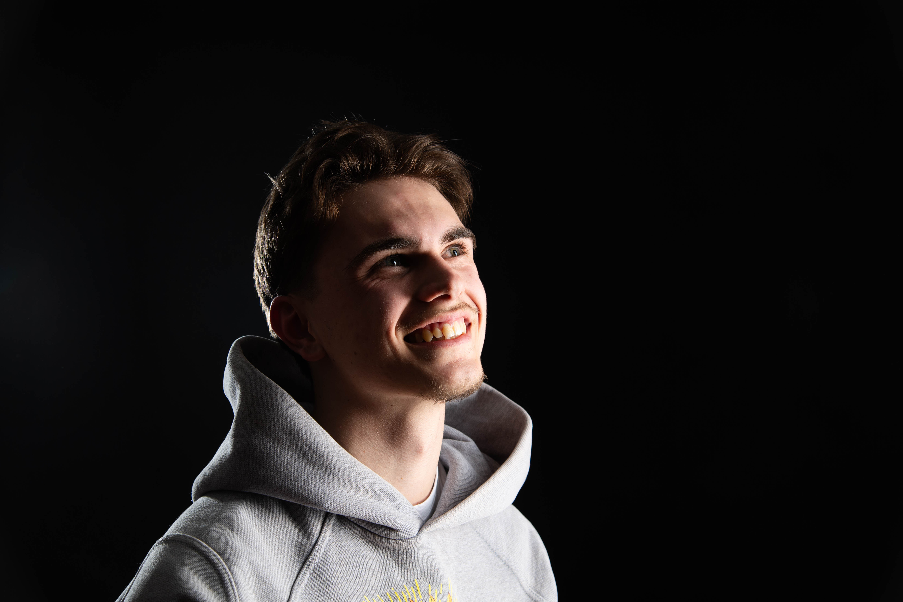

Ich bin James Pocher.

Hoi zämme, ich bin James Pocher — aufgewachsen in Bellach im Kanton Solothurn, alles fing im Zeichenunterricht in der Schule an. Schon damals habe ich mich in Designs, visuelle Konzepte und die kreative Freiheit verliebt. Bei der Lehrstellensuche sagte mir mein Bauchgefühl immer, dass Mediamatiker genau das richtige für mich ist. Somit begann mein Weg vor vier Jahren bei der BiCT AG in Ostermundigen. Meine Skills und meine Person führten mich in der zweiten Phase meiner Lehre dann weiter zum Bundesamt für Energie in Ittigen.
Als Mediamatiker bewege ich mich täglich an der Schnittstelle von Kreativität und Strategie: Ich produziere Videos, gestalte Layouts, entwickle Markenwelten und erzähle Geschichten, die bleiben.
Mein Anspruch ist es, moderne Ästhetik mit klarer Kommunikation zu verbinden — ruhig, präzise, mit einem Auge für Details, die man erst auf den zweiten Blick entdeckt. Für mich beginnt gutes Handwerk nicht vor der Kamera oder am Bildschirm — es beginnt mit dem richtigen Zuhören.
Kamera
& Schnitt
- Videoproduktion & Regie
- Fotoredaktion & Retusche
- Color Grading
- Motion Graphics
- Social Media Ads
Design
& Layout
- Brand & Visual Identity
- Print & Drucksachen
- Infografiken
- UI-Grundlagen
- Typografie
Content
& Strategie
- Content-Konzepte
- Social Media Strategie
- Storytelling
- Redaktionsplanung
- Kampagnenstrategie
2022 startete ich meine Lehre bei der BiCT AG. Dort erlente ich die Basics zum Mediamatiker. Durch die Skills der Coaches konnte ich viel Erfahrung sammeln und bereits einige eigenständige Projekte umsetzen.
Video, Fotografie und Kommunikationsprojekte für eine Bundesbehörde — von Eventdokumentationen bis zu internen Kampagnen.
Einstieg in die Selbständigkeit mit eigenem Studio im Wankdorf. Visuelle Kommunikation, Videoproduktion und kreative Projekte für Marken und Einzelpersonen.
Klarheit
Ich mag kein unnötiges Rauschen. Jedes Element muss einen Grund haben — in der Komposition, im Schnitt, im Text.
Handwerk
Gutes Ergebnis entsteht nicht durch Zufall. Ich investiere in die Details, die man auf den ersten Blick nicht sieht, die man aber spürt.
Neugier
Jedes Projekt ist eine Chance, etwas Neues zu lernen. Ich bringe Referenzen mit, höre zu und denke über den Tellerrand hinaus.
Wirkung
Design das niemanden bewegt, hat seinen Job nicht gemacht. Ich arbeite so lange, bis das Ergebnis tatsächlich etwas auslöst.